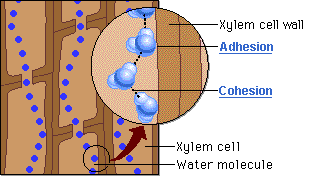

When water enters the roots, hydrogen bonds link each water molecule to the next so the molecules of water are pulled up the thin xylem vessels like beads on a string. The water moves up the plant, enters the leaves, moves into air spaces in the leaf, and then evaporates (transpires) through the stomata (singular, stoma).
 Continue to see more of The Process of Transpiration.
Continue to see more of The Process of Transpiration.